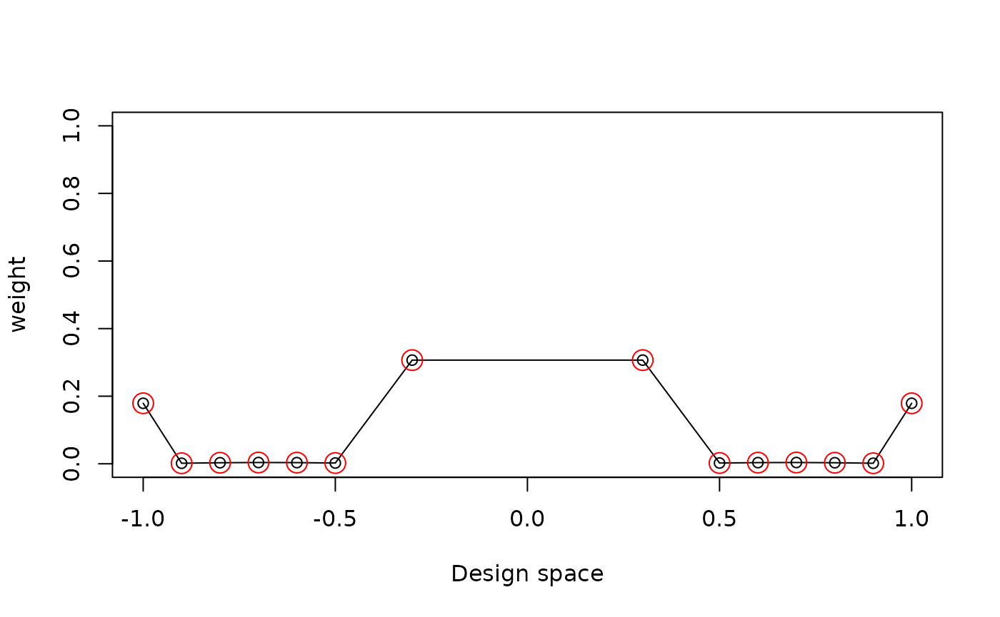
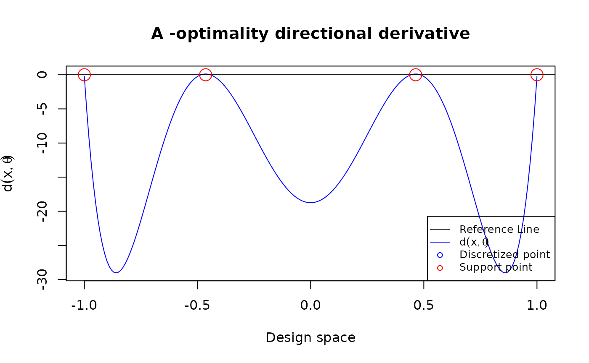
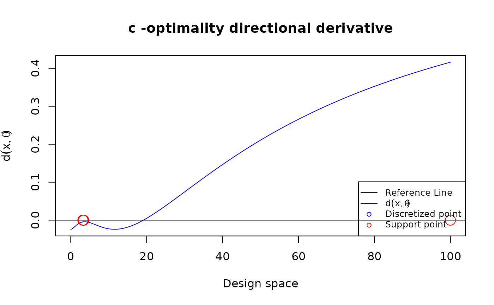

SLSEdesign
Optimal Design under Second-order Least Squares Estimator
Chi-Kuang Yeh and Julie Zhou
University of Waterloo and University of Victoria
University of Waterloo and University of Victoria
2025-06-04
Source:vignettes/SLSEdesign.Rmd
SLSEdesign.RmdInstallation
# required dependencies
require(SLSEdesign)
#> Loading required package: SLSEdesign
require(CVXR)
#> Loading required package: CVXR
#>
#> Attaching package: 'CVXR'
#> The following object is masked from 'package:stats':
#>
#> powerSpecify the input for the program
N: Number of design points
S: The design space
tt: The level of skewness
: The parameter vector
FUN: The function for calculating the derivatives of the given model
N <- 21
S <- c(-1, 1)
tt <- 0
theta <- rep(1, 4)
poly3 <- function(xi,theta){
matrix(c(1, xi, xi^2, xi^3), ncol = 1)
}
u <- seq(from = S[1], to = S[2], length.out = N)
res <- Aopt(N = N, u = u, tt = tt, FUN = poly3,
theta = theta)Manage the outputs
Showing the optimal design and the support points
res$design
#> location weight
#> 1 -1.0 0.17905
#> 2 -0.9 0.00159
#> 3 -0.8 0.00310
#> 4 -0.7 0.00378
#> 5 -0.6 0.00346
#> 6 -0.5 0.00226
#> 8 -0.3 0.30676
#> 14 0.3 0.30676
#> 16 0.5 0.00226
#> 17 0.6 0.00346
#> 18 0.7 0.00378
#> 19 0.8 0.00310
#> 20 0.9 0.00159
#> 21 1.0 0.17905Or we can plot them
plot_weight(res$design)
Plot the directional derivative to use the equivalence theorem for 3rd order polynomial models
D-optimal design
poly3 <- function(xi,theta){
matrix(c(1, xi, xi^2, xi^3), ncol = 1)
}
design <- data.frame(location = c(-1, -0.447, 0.447, 1),
weight = rep(0.25, 4))
u = seq(-1, 1, length.out = 201)
plot_dispersion(u, design, tt = 0, FUN = poly3,
theta = rep(0, 4), criterion = "D")A-optimal design
poly3 <- function(xi, theta){
matrix(c(1, xi, xi^2, xi^3), ncol = 1)
}
design <- data.frame(location = c(-1, -0.464, 0.464, 1),
weight = c(0.151, 0.349, 0.349, 0.151))
u = seq(-1, 1, length.out = 201)
plot_dispersion(u, design, tt = 0, FUN = poly3, theta = rep(0,4), criterion = "A")
Plot the directional derivative to use the equivalence theorem for peleg model under c-optimality
my_peleg <- function(xi, theta) {
deno <- (theta[1] + theta[2]*xi)
matrix(c(-xi/deno^2, -xi^2/deno^2), ncol = 1)
}
Npt <- 1001
my_u <- seq(0, 100, length.out = Npt)
my_theta <- c(0.5, 0.05)
my_cVec <- c(1, 1)
my_design <- copt(
N = Npt, u = my_u,
tt = 0, FUN = my_peleg, theta = my_theta, num_iter = 50000,
cVec = my_cVec
)
plot_dispersion(my_u, my_design$design, tt = 0, FUN = my_peleg, theta = my_theta, criterion = "c", cVec = my_cVec)